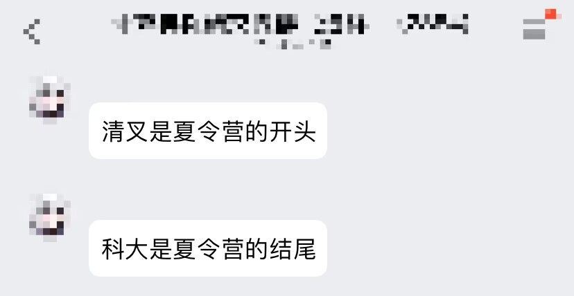

5 月 26 日晚上，我的舍友王神发了一个微信公众号通知，跟我说，清华大学交叉信息研究院计算机夏令营明早零点一过就要截止了，我看了时间，差不多 23:00，只剩一个小时。我对王神说，算了吧，快截止了。王神告诉我试一试，否则别后悔，那可是清华。王神把我拉进计算机保研交流群（绿群），让我关注里面的消息，于是我匆匆忙忙填写完清华申请材料。
隔了两三天，出了结果，显然，我被刷下去了。这便是我夏令营的开始。
清华北大的热门专业，它们一般会在本科生大二的时候举办一些做客活动，学生提前联系老师进课题组做项目，这样在大三夏令营才会收到老师青睐和庇护。当然，时间线会拉得很长，和清北老师做一年时间，有可能被老师放鸽子，因此，风险也大。

五月底，伴随着我本科最后一门矩阵分析课程的结束，我将重心全放在推免之事上。由于我是跨专业，因此复习的东西实在太多，我准备不过来，像 LeetCode 数据结构机试，最后也只刷了热题 100 的一半不到，索性放弃了。
刷机试题的同时，我也在快速准备保研即将用到的文书，我害怕到了六月大概率没时间准备，信然，事实也确实如此，几乎整个六月都在夏令营系统填报、夏令营最新动态、学习夏令营的流程、套辞交流联系导师，总之，打全方位信息站。因为此前根本不关注保研推免，所以对夏令营这个概念陌生，我的工作效率起初很低下。但好在一直在绿群里学习，和群友交流，对推免的概念熟悉起来后，效率就很高了。
夏令营材料准备过程，以及后期网页申请填报，都是极其耗费时间精力且繁琐无趣的事情，我能给你唯一的建议就是“忍住”，多查资料、多询问人、多去教务处跑跑腿。
站在今天 9 月 30 号，回过头看夏令营，我觉得夏令营历程整体上还是非常舒适平淡的，虽然有波折，但没有那么煎熬痛苦。而这源于 5 月 31 号，我联系了一位中科大人工智能的导师，加了他微信，聊了很多，没过几天，我和他达成了契约，我决定来他这，他决定接收我。我想这应该就是我贯穿整个夏令营的暗线，也是我认为舒适的底气。
然而，我太相信人了，这为不久后的预推免埋下了严重的祸根。
这份 Excel 表格是我夏令营申请院校的情况，我只读硕士，所以没申请博士，绿色表示入营，红色表示被拒。我夏令营的主要方向是人工智能，次要方向是计算机、大数据等，这与我预推免方向恰恰相反。之所以投了 20 多所，是因为我发现身边计算机科班出身的平均水平都 30 多所，我数学的要是再不海投，估计直接完蛋。夏令营的最终战况是，只有中科大的唯一 offer，我明里暗里推拒了其他院校 offer。